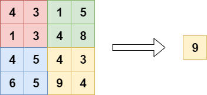
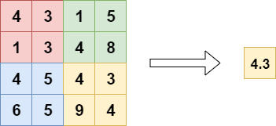
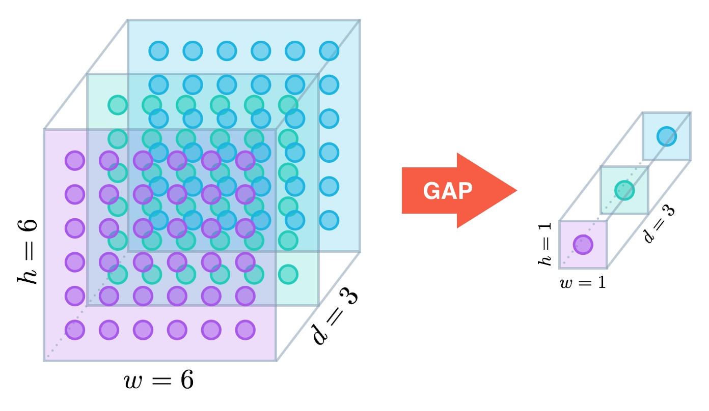

池化层知识点
目录
- 1.CNN中池化的作用
- 2.全局池化的作用
- 3.池化的分类
- 4.池化的进阶使用---SPP结构介绍
- 5.介绍一下CLIP pooled embedding的作用
- 6.AI模型的池化层包含可学习参数吗？
1.CNN中池化的作用
池化层的作用是 对感受野内的特征进行选择，提取区域内最具代表性的特征，能够有效地减少输出特征数量，进而减少模型参数量 。按操作类型通常分为最大池化(Max
Pooling)、平均池化(Average Pooling)和求和池化(Sum Pooling)，它们分别提取感受野内最大、平均与总和的特征值作为输出，最常用的是最大池化和平均池化。
2.全局池化的作用
全局池化主要包括全局平均池化和全局最大池化。


接下来，Rocky以全局平均池化为例，讲述其如何在深度学习网络中发挥作用。
刚才已经讲过，全局平均池化就是对最后一层卷积的特征图，每个通道求整个特征图的均值。如下图所示：

一般网络的最后会再接几个全连接层，但全局池化后的feature map相当于一像素，所以最后的全连接其实就成了一个加权相加的操作。这种结构比起直接的全连接更加直观，参数量大大幅下降，并且泛化性能更好：

全局池化的作用：
1.降低信息冗余 ：
- 池化层有助于提取输入特征图中的主要信息，同时抑制次要信息。这种操作使得模型更专注于重要特征，减少冗余或不相关的特征，有利于模型的训练和泛化能力。
2.特征降维与下采样 ：
- 池化操作导致输出特征图的尺寸减小，实现了特征降维和下采样的效果。这有助于减少计算量，并提高后续层对图像特征的感知范围，使得一个池化后的像素对应前面图片中的一个区域。
3.特征压缩与网络简化 ：
- 池化层能够对特征图进行压缩，减少计算资源的消耗，简化网络结构，降低模型复杂度，有助于防止过拟合，提高模型的泛化能力。
4.提升模型的不变性 ：
- 池化操作有助于提升模型对尺度、旋转和平移的不变性。经过池化后的特征图，在输入特征图的大小或旋转角度发生变化时，输出特征图的大小和旋转角度保持不变。这种不变性有助于提高模型的泛化能力和鲁棒性。
5.实现非线性。

3.池化的分类
A. 一般池化（General Pooling）：
在CNN中，池化层用于减小特征图的空间尺寸，以降低计算量并减少过拟合的可能性。最常见的池化操作有两种：
平均池化（Average Pooling）：
- 计算图像区域的平均值作为该区域池化后的值。
- 能够抑制由于邻域内大小受限造成估计值方差增大的现象。
- 其特点是对于背景的保留效果更好。
最大池化（Max Pooling）：
- 选取图像区域的最大值作为该区域池化后的值。
- 能够抑制网络参数误差造成估计均值偏移的现象。
- 其特点是更好地提取纹理信息。
随机池化（Stochastic Pooling）：
- 根据概率对局部的值进行采样，采样结果便是池化结果。
B. 重叠池化（Overlapping Pooling）：
在某些情况下，相邻的池化窗口之间可以有重叠区域。这种情况下一般会设置池化窗口的大小（size）大于步幅（stride）。
重叠池化的特点是相比于常规池化操作，它可以更充分地捕获图像特征，但也可能导致计算量增加。
这些池化方法是CNN中常用的技术手段，用于在保留重要信息的同时减少数据尺寸和参数量，从而改善模型的性能和泛化能力。
4.池化的进阶使用---SPP结构介绍
论文名称：Spatial Pyramid Pooling in Deep Convolutional Networks for Visual Recognition 下载地址：https://arxiv.org/abs/1406.4729
空间金字塔池化（Spatial Pyramid Pooling，SPP）层的引入解决了在传统卷积神经网络（CNN）中需要固定输入图像尺寸的限制。传统的全连接层对于输入要求固定大小的特征向量，这意味着所有输入图像需要统一尺寸，通常需要进行裁剪或拉伸，导致图像失真。SPP层允许网络接受不同尺寸的输入图像，通过金字塔形状的池化区域对不同大小的特征图进行整合和提取特征。其作用在于将不同大小的特征图转换成固定大小的特征向量，使得在连接全连接层之前，所有输入都具有相同的大小，无需提前处理图像。这种灵活性提高了网络的适用性和泛化能力，使得模型能够更灵活地处理各种尺寸的输入。
SPP（空间金字塔池化）的显著特点有：
固定大小的输出：无论输入尺寸如何，SPP能够产生固定大小的输出，克服了全连接层要求固定长度输入的限制。
多个窗口的池化：SPP采用多个窗口的池化，使其能够在不同尺度下提取特征。
尺度不变性和特征一致性：可以处理不同纵横比和尺寸的输入图像，增强了模型的尺度不变性，降低了过拟合的风险。
其他特点包括：
多样性训练图像对网络收敛更容易：SPP允许训练使用不同尺寸的图像，相较于单一尺寸的训练图像，这种多样性训练更有利于网络的收敛。
独立于特定网络设计和结构：SPP可用作卷积神经网络的最后一层，不会影响网络结构，仅替换了原本的池化层。
适用于图像分类和目标检测：SPP不仅适用于图像分类，还可用于目标检测等任务，扩展了其应用领域。
SPP的这些特点使得它成为一个强大的工具，在处理不同尺寸、不同纵横比的图像时，保持固定长度特征向量的输出，提高了模型的灵活性和泛化能力。
5.介绍一下CLIP pooled embedding的作用
CLIP Pooled Embedding 的作用详细解析
CLIP（Contrastive Language-Image Pretraining）是强大的AI多模态模型，由 OpenAI 提出，用于将自然语言与图像相联系。CLIP 的核心是一个双塔结构，分别包含一个文本编码器和一个图像编码器，通过对比学习（contrastive learning）训练，使图像和文本在共享的嵌入空间中具有相似的表示。
其中，Pooled Embedding 是 CLIP 提供的一种高效的语义特征表示方法，主要用于提取文本或图像的全局特征，广泛用于AI多模态任务和下游应用。
什么是 Pooled Embedding？
在 CLIP 中：
- 图像编码器（如 ViT 或 ResNet）将图像输入转化为一组 token 的嵌入表示。
- 文本编码器（如 Transformer）将文本输入转化为一组 token 的嵌入表示。
这些编码器通常生成序列化的输出，表示输入的各个部分。但在很多任务中，我们需要一个全局的语义特征，这就是 Pooled Embedding 的作用。
生成 Pooled Embedding 的方法
-
CLS Token（[CLS] 标记）：
- 在 Transformer 架构中（例如 BERT 或 CLIP 的文本编码器），通常会在输入前加入一个特殊的
[CLS]标记。 - 编码完成后，CLS 的嵌入被视为全局语义表征。
- CLIP 文本编码器会直接使用该 CLS Token 的嵌入作为文本的 Pooled Embedding。
- 在 Transformer 架构中（例如 BERT 或 CLIP 的文本编码器），通常会在输入前加入一个特殊的
-
Global Average Pooling（全局平均池化）：
- 对于图像编码器（如 ViT 或 ResNet），CLIP 通常使用全局平均池化操作，将图像的每个 token 的嵌入取平均值，生成单一向量表示，作为图像的 Pooled Embedding。
Pooled Embedding 的作用
1. 全局语义表征
Pooled Embedding 提供了输入（文本或图像）的全局语义信息，适合于需要整体语义理解的任务。
- 文本： 表示整段文字的语义。
- 图像： 表示整张图片的视觉语义。
2. 对比学习中的对齐
CLIP 的训练目标是将相关的图像-文本对拉近，而将不相关的对拉远。
- 文本和图像分别通过其编码器生成 Pooled Embedding。
- 通过对比学习（Contrastive Loss），CLIP 在高维空间中优化，使图像和对应文本的 Pooled Embedding 尽可能接近。
3. 下游任务的输入特征
Pooled Embedding 是许多下游任务的基础特征，常用于：
- 分类任务： 提取图像或文本的嵌入后，输入分类器。
- 检索任务： 用于图像到文本、文本到图像的检索匹配。
- 多模态任务： 如视觉问答（VQA）和视觉-文本生成，使用 Pooled Embedding 作为全局上下文。
4. 高效表征
Pooled Embedding 通过一个固定大小的向量（如 512 维）表示输入，能够大幅简化计算，适合后续的处理和存储。
Pooled Embedding 的计算过程
图像编码器（Image Encoder）
假设图像编码器使用的是 ViT（Vision Transformer）：
- 输入图像被分成固定大小的 patch。
- 每个 patch 转换为 token，输入到 Transformer。
- 输出的 token 是一个序列，其中包括了
[CLS]token。 - CLIP 使用 全局平均池化（Global Average Pooling） 对所有 token 取平均值，得到图像的 Pooled Embedding。
文本编码器（Text Encoder）
假设文本编码器使用的是 Transformer：
- 输入文本被分解为 token（如单词或子词）。
- 特殊的
[CLS]token 被添加到输入序列的开头。 - Transformer 输出序列的表示，其中
[CLS]token 的嵌入被用作文本的 Pooled Embedding。
应用场景
1. 多模态检索
通过 Pooled Embedding，可以实现图像与文本的相互检索：
- 将图像的 Pooled Embedding 与文本的 Pooled Embedding 在共享空间中匹配。
- 相似度较高的嵌入被认为是相关的。
2. 分类任务
- 提取图像的 Pooled Embedding，作为输入特征传递给分类器。
- 可用于物体分类、情感分析等任务。
3. 内容生成
- 在生成任务中（如文本生成、图像生成），Pooled Embedding 可以作为条件输入，指导生成过程。
4. 语义搜索
- 使用文本 Pooled Embedding，快速进行语义相关内容的检索。
- 如基于文本描述搜索图像。
优点与局限性
优点
- 简洁高效：Pooled Embedding 是固定大小的向量，便于存储和后续计算。
- 语义丰富：对输入的全局语义有良好概括。
- 适用广泛：适合检索、分类等多种任务。
局限性
- 上下文丢失：对于复杂输入，可能丢失部分局部细节。
- 固定长度限制：特征向量维度固定，可能不足以表达某些复杂场景的全部信息。
6.AI模型的池化层包含可学习参数吗？
AI模型的池化层（Pooling Layer）不包含可学习的参数。
池化层的作用
池化层的主要功能是对输入特征图进行下采样，减小特征图的尺寸，降低计算复杂度，同时保留重要的特征信息。常见的池化操作包括：
- 最大池化（Max Pooling）：取池化窗口中的最大值。
- 平均池化（Average Pooling）：计算池化窗口中的平均值。
池化层不包含参数的原因
-
池化层没有权重或偏置参数：
- 与卷积层或全连接层不同，池化层的操作只是固定规则的计算（如取最大值或平均值），不需要学习任何权重或偏置。
- 例如：
- 最大池化：在窗口内取最大值，不涉及任何可学习的参数。
- 平均池化：在窗口内取平均值，同样不需要参数。
-
仅依赖于池化窗口大小和步幅：
- 池化层的行为由超参数决定，如：
- 池化窗口大小（如 $2 \times 2$ ）
- 步幅（Stride）：窗口移动的步长
- 这些超参数是固定的，不需要通过训练学习。
- 池化层的行为由超参数决定，如：
池化层的参数总结
| 层类型 | 是否包含参数 | 说明 |
|---|---|---|
| 卷积层（Conv） | ✅ 是 | 权重（Kernel）和偏置（Bias） |
| 全连接层（FC） | ✅ 是 | 权重矩阵和偏置向量 |
| 最大池化层（Max Pooling） | ❌ 否 | 固定规则：取最大值 |
| 平均池化层（Avg Pooling） | ❌ 否 | 固定规则：取平均值 |
| Dropout 层 | ❌ 否 | 用于随机丢弃神经元，无参数 |
| 批归一化（BatchNorm） | ✅ 是 | 包含可学习的缩放和平移参数 |